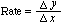

Enzyme Action Over Time
We can calculate the rate of a reaction by measuring, over time, either the disappearance of substrate (as in our catalase example) or the appearance of product (as in the above graph). For example, on the graph above, what is the rate, in moles/second, over the interval from 0 to 10 seconds?

so for this example, the rate would be
| Calculate the rate in moles/second between 40 and 50 seconds. |
 Continue to the Lab Quiz.
Continue to the Lab Quiz.